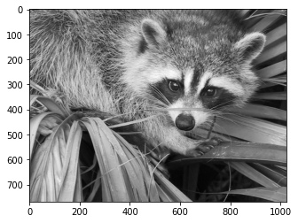
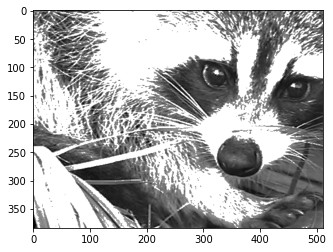

Numpy : Slicing et Indexing
Sommaire :
import numpy as np
1. Indexing et Slicing
Le fonctionnement est le meme que pour les listes
A = np.array([[1, 2, 3], [4, 5, 6]])
print(A)
-
[[1 2 3]
[4 5 6]]
# Pour acceder a la ligne 0, colonne 1
A[0, 1]
-
2
victor = [1,2,3,4,5,6,7,8,9,10]
victor[8:2:-1]
-
[9, 8, 7, 6, 5, 4]
# Pour selectionner les blocs de la ligne (0-1) colonne (0-1)
A[0:2, 0:2]
-
array([[1, 2],
[4, 5]])
A[0:2, 0:2] = 10
print(A)
-
[[10 10 3]
[10 10 6]]
2. Boolean Indexing
A = np.array([[1, 2, 3], [4, 5, 6]])
print(A<5) # masque booléen
print(A[A < 5]) # sous-ensemble filtré par le masque booléen
A[A<5] = 4 # convertit les valeurs sélectionnées.
print(A)
-
[[ True True True]
[ True False False]]
[1 2 3 4]
[[4 4 4]
[4 5 6]]
3. Exercices et Solutions
Exercice 1
Remplir les 4 blocs du milieux par des "1"
B = np.zeros((4, 4))
B
-
array([[0., 0., 0., 0.],
[0., 0., 0., 0.],
[0., 0., 0., 0.],
[0., 0., 0., 0.]])
Exercice 2
Remplir le tableau de "1" (une ligne sur deux, une colonne sur deux)
C = np.zeros((5, 5))
C
Exercice 3
Sur l'image ci dessous, effectuer un slicing pour ne garder que la moitié de l'image (en son centre) et remplacer tous les pixels > 150 par des pixels = 255
from scipy import misc
import matplotlib.pyplot as plt
face = misc.face(gray=True)
plt.imshow(face, cmap=plt.cm.gray)
plt.show()
face.shape
-
(768, 1024)

💡 Cliquez ici pour voir la solution
SOLUTION 1
B[1:3 , 1:3] = 1
B
-
array([[0., 0., 0., 0.],
[0., 1., 1., 0.],
[0., 1., 1., 0.],
[0., 0., 0., 0.]])
SOLUTION 2
C[::2, ::2] = 1
C
-
array([[1., 0., 1., 0., 1.],
[0., 0., 0., 0., 0.],
[1., 0., 1., 0., 1.],
[0., 0., 0., 0., 0.],
[1., 0., 1., 0., 1.]])
SOLUTION 3
x, y = face.shape
zoom_face = face[x//4 : -x//4, y //4: -y//4] # redimensionner en divisant chaque dimension par 4 (division entiere)
zoom_face[zoom_face>150] = 255 # boolean indexing
plt.imshow(zoom_face, cmap=plt.cm.gray)
plt.show()
-
